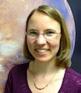

Michel Dumontier: "Generating Biomedical Hypotheses Using Semantic Web Technologies"
Abstract: With its focus on investigating the nature and basis for the sustained existence of living systems, modern biology has always been a fertile, if not challenging, domain for formal knowledge representation and automated reasoning. Over the past 15 years, hundreds of projects have developed or leveraged ontologies for entity recognition and relation extraction, semantic annotation, data integration, query answering, consistency checking, association mining and other forms of knowledge discovery. In this talk, I will discuss our efforts to build a rich foundational network of ontology-annotated linked data, discover significant biological associations across these data using a set of partially overlapping ontologies, and identify new avenues for drug discovery by applying measures of semantic similarity over phenotypic descriptions. As the portfolio of Semantic Web technologies continue to mature in terms of functionality, scalability and an understanding of how to maximize their value, increasing numbers of biomedical researchers will be strategically poised to pursue increasingly sophisticated KR projects aimed at improving our overall understanding of the capability and behavior of biological systems.
Biography: Dr. Michel Dumontier is an Associate Professor of Medicine (Biomedical Informatics) at Stanford University. His research focuses on the development of computational methods to increase our understanding of how living systems respond to chemical agents. At the core of the research program is the development and use of Semantic Web technologies to formally represent and reason about data and services so as (1) to facilitate the publishing, sharing and discovery of scientific knowledge, (2) to enable the formulation and evaluation scientific hypotheses and (3) to create and make available computational methods to investigate the structure, function and behavior of living systems. Dr. Dumontier serves as a co-chair for the World Wide Web Consortium Semantic Web in Health Care and Life Sciences Interest Group (W3C HCLSIG) and is the Scientific Director for Bio2RDF, a widely used open-source project to create and provide linked data for life sciences.
Haym Hirsh: Socially Intelligent Science
Abstract: Standing on the shoulders of giants" is a metaphor for how science progresses: our knowledge grows by expanding and building off what others have learned and taught us cialis online cheap in the past. Implicit in this metaphor is that science is a social enterprise -- we learn from others and we relate what we do to what others have done. However, in recent decades scientists have invented new ways to bring people together at unprecedented scale in the pursuit of advancing science and pushing the thresholds of what we know. These new forms of social enterprise -- made possible by innovations in computing and the widespread reach of the Internet -- are facilitating discovery and innovation in a range of areas of science and technology. In this talk I will survey examples of these new forms of "socially intelligent" science, while also providing a historical context that shows that elements of many of these ideas predate the Internet era.
Biography: Dr. Haym Hirsh is Dean of Computing and Information Science and Professor of Computer Science and Information Science at Cornell University. Previously, he was Professor of Computer Science at Rutgers University. From 2006 to 2010 he served as Director of the Division of Information and Intelligent Systems at the National Science Foundation.
David Jensen: Representing and Reasoning with Experimental and Quasi-Experimental Designs
Abstract: The formulation and widespread adoption of the randomized controlled trial is one of the most important intellectual achievements of the twentieth century. However, the precise logic of RCTs, and the extent to which similar logic can be extended to analysis of data collected under alternative conditions, is not widely known or easily formalized. The language of causal graphical models -- a well-developed formalism from computer science -- can describe much of the logic behind experimental and quasi-experimental designs, and recent extensions to that language can express an even wider array of designs. In addition, this formalization has revealed new types of designs and new opportunities for computational assistance in the analysis of experimental and observational data.
Biography: David Jensen is Associate Professor of Computer Science and Director of the Knowledge Discovery Laboratory at the University of Massachusetts Amherst. From 1991 to 1995, he served as an analyst with the Office of Technology Assessment, an agency of the United States Congress. He received his doctorate from Washington University in St. Louis in 1992. His research focuses on machine learning and knowledge discovery in complex data sets, with applications to computational social science, social network analysis, and fraud detection. His most recent work focuses on discovery of causal knowledge in massive data sets through the automated identification and application of quasi-experimental designs. He regularly serves on the program committees of the International Conference on Machine Learning and the International Conference on Knowledge Discovery and Data Mining. He was a member of the 2006-2007 Defense Science Study Group, he served on the Executive Committee of the ACM Special Interest Group on Knowledge Discovery and Data Mining from 2006 to 2012, and he served on DARPA's Information Science and Technology (ISAT) Group from 2007 to 2012.
Peter D. Karp: "Bioinformatics computation of metabolic models from sequenced genomes"
Abstract: The bioinformatics field has developed the ability to extract far more information from sequenced genomes than was envisioned in the early days of the Human Genome Project. By connecting a set of analytical programs into a computational pipeline, we can recognize genes within a sequenced genome, assign functions to those genes, infer reactions catalyzed by the gene products, arrange those reactions into metabolic pathways, and create a computational metabolic model of the organism. The computational methods used by pipeline components include machine learning, pattern matching, inexact sequence matching, and optimization. This success story can provide lessons to other areas of computational science, and raises interesting questions about what it means for machines to make scientific discoveries.
Biography: Peter D. Karp is Director of the Bioinformatics Research Group at SRI International. Dr. Karp's bioinformatics research has focused on metabolic-pathway bioinformatics, and on biological databases and ontologies. He has developed novel algorithms for predicting the metabolic pathway complement of an organism from its genome, for
predicting which genes in an organism code for enzymes missing from its metabolic pathways, and for visualizing metabolic pathways. Karp developed the Pathway Tools software, the EcoCyc and MetaCyc databases, and the BioCyc database collection. Karp has also worked in the area of bioinformatics database integration. Dr. Karp has authored more than 100 publications in bioinformatics and computer science. He is a Fellow of the International Society for Computational Biology and an SRI Fellow. He received the Ph.D. degree in Computer Science from Stanford University, and was a postdoctoral fellow at the NIH National Center for Biotechnology Information.
Claire Monteleoni: "Climate Informatics: Recent Advances and Challenge Problems for Machine Learning in Climate Science"
Abstract: The threat of climate change is one of the greatest challenges currently facing society. Given the profound impact machine learning has made on the natural sciences to which it has been applied, such as the field of bioinformatics, machine learning is poised to accelerate discovery in climate science. Our recent progress on climate informatics reveals that collaborations with climate scientists also open interesting new problems for machine learning. I will give an overview of challenge problems in climate informatics, and present recent work from my research group in this nascent field. A key problem in climate science is how to combine the predictions of the multi-model ensemble of global climate models that inform the Intergovernmental Panel on Climate Change (IPCC). I will present three approaches to this problem. Our Tracking Climate Models (TCM) work demonstrated the promise of an algorithm for online learning with expert advice, for this task. Given temperature predictions from 20 IPCC global climate models, and over 100 years of historical temperature data, TCM generated predictions that tracked the changing sequence of which model currently predicts best. On historical data, at both annual and monthly time-scales, and in future simulations, TCM consistently outperformed the average over climate models, the existing benchmark in climate science, at both global and continental scales. We then extended TCM to take into generic viagra cheap account climate model predictions at higher spatial resolutions, and to model geospatial neighborhood influence between regions. Our second algorithm enables neighborhood influence by modifying the transition dynamics of the Hidden Markov Model from which TCM is derived, allowing the performance of spatial neighbors to influence the temporal switching probabilities for the best climate model at a given location. We recently applied a third technique, sparse matrix completion, in which we create a sparse (incomplete) matrix from climate model predictions and observed temperature data, and apply a matrix completion algorithm to recover it, yielding predictions of the unobserved temperatures.
Biography: Claire Monteleoni is an assistant professor of Computer Science at The George Washington University, which she joined in 2011. Previously, she was research faculty at the Center for cialis online generic Computational Learning Systems, and adjunct faculty in the Department of Computer Science, at Columbia University. She did a postdoc in Computer Science and Engineering at the University of California, San Diego, and completed her PhD and Masters in Computer Science, at MIT. Her research focus is on machine learning algorithms and theory for problems including learning from data streams, learning from raw (unlabeled) data, learning from private data, and Climate Informatics: accelerating discovery in Climate Science with machine learning. Her papers have received several awards. In 2011, she co-founded the International Workshop on Climate Informatics, which is now entering its third year. She is on the Editorial Board of the Machine Learning Journal, and she served as an Area Chair for ICML 2012, and NIPS 2013.
Zoran Obradovic: "Predictive Modeling of Patient State and Therapy Optimization"
Abstract: Uncontrolled inflammation accompanied by an infection that results in septic shock is the most common cause of death in intensive care units and the 10th leading cause of death overall. In principle, spectacular mortality rate reduction can be achieved by early diagnosis and accurate prediction of response to therapy. This is a very difficult objective due to the fast progression and complex multi-stage nature of acute inflammation. Our ongoing DARPA DLT project is addressing this challenge by development and validation of effective predictive modeling technology for analysis of temporal dependencies in high dimensional multi-source sepsis related data. This lecture will provide an overview of the results of our project, which show potentials for significant mortality reduction in severe sepsis patients.
Biography: Zoran Obradovic’s research interests include data mining, machine learning and complex networks applications in climate modeling and health management. He is the executive editor at the journal on Statistical Analysis and Data Mining, which is the official publication of the American Statistical Association and is an editorial board member at eleven journals. He is general co-chair for 2014 SIAM International Conference on Data Mining and was the program or track chair at many data mining and biomedical informatics conference. His data analytics work is published in more than 280 articles and is cited about 12,000 times (h-index 42).
Christopher Re: "Case Studies in Data-Driven Systems: Building Carbon Maps to Finding Neutrinos"
Abstract: The question driving my work is, how should one deploy statistical data-analysis tools to enhance data-driven systems? Even partial answers to this question may have a large impact on science, government, and industry---each of whom are increasingly turning to statistical techniques to get value from their data. To understand this question, my group has built or contributed to a diverse set of data-processing systems for scientific applications: a system, called GeoDeepDive, that reads and helps answer questions about the geology literature and a muon filter that is used in the IceCube neutrino telescope to process over 250 million events each day in the hunt for the origins of the universe. This talk will give an overview of the lessons that we learned in these systems, will argue that data systems research may play a larger role in the next
generation of these systems, and will speculate on the future challenges that such systems may face.
Biography: Christopher (Chris) Re is an assistant professor in the Department of Computer Science at Stanford University. The goal of his work is to enable users and developers to build applications that more deeply understand and exploit data. Chris received his PhD from the University of Washington in Seattle under the supervision of Dan Suciu. For his PhD work in probabilistic data management, Chris received the SIGMOD 2010 Jim Gray Dissertation Award. Chris's papers have received four best-paper or best-of-conference citations, including best paper in PODS 2012, best-of-conference in PODS 2010 twice, and one best-of-conference in ICDE 2009). Chris received an NSF CAREER Award in 2011 and an Alfred P. Sloan fellowship in 2013.
Kiri L. Wagstaff: Look at this gem: Automated data prioritization for scientific discovery of exoplanets, mineral deposits, and more

Abstract: Inundated by terabytes of data flowing from telescopes, microscopes, DNA sequencers, etc., scientists in various disciplines have a need for automated methods for http://www.ejsmith.com/ prioritizing data for review. Which observations are most interesting or unusual, and why? I will describe DEMUD (Discovery by Eigenbasis Modeling of Uninteresting Data), which iteratively prioritizes items from large data sets to provide a diverse traversal of interesting items. By modeling what the user already knows and/or has already seen, DEMUD can focus attention on the unexpected, facilitating new discoveries. Uniquely, DEMUD also provides a domain-relevant explanation for each selected item that indicates why it stands out. DEMUD's explanations offer a first step towards automated interpretation of scientific data discoveries. We are using DEMUD in collaboration with scientists from the Mars Science Laboratory, the Mars Reconnaissance Orbiter, the Kepler exoplanet telescope, Earth orbiters, and more. It provides scalable performance, interpretable output, and new insights into very large data sets from diverse disciplines. This is joint work with James Bedell, Nina L. Lanza, Tom G. Dietterich, Martha S. Gilmore, and David R. Thompson.
Biography: Kiri L. Wagstaff is a senior researcher in artificial intelligence and machine learning and a tactical activity planner for the Opportunity Mars rover at the Jet Propulsion Laboratory. Her research focuses on developing new machine learning and data analysis methods, particularly those that can be used for in situ analysis onboard spacecraft such as orbiters, landers, rovers, and so on. She holds a Ph.D. in Computer Science from Cornell University and an M.S. in Geological Sciences from the University of Southern California. She received a 2008 Lew Allen Award for Excellence in Research for work on the sensitivity of machine learning methods to high-radiation space environments and a 2012 NASA Exceptional Technology Achievement award for work on transient detection methods in radio astronomy data. She is passionate about keeping machine learning relevant to real-world problems and is co-editing a special issue on Machine Learning for Science and Society.